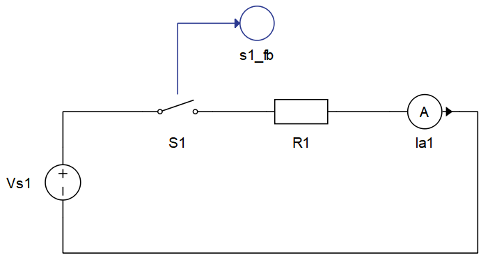
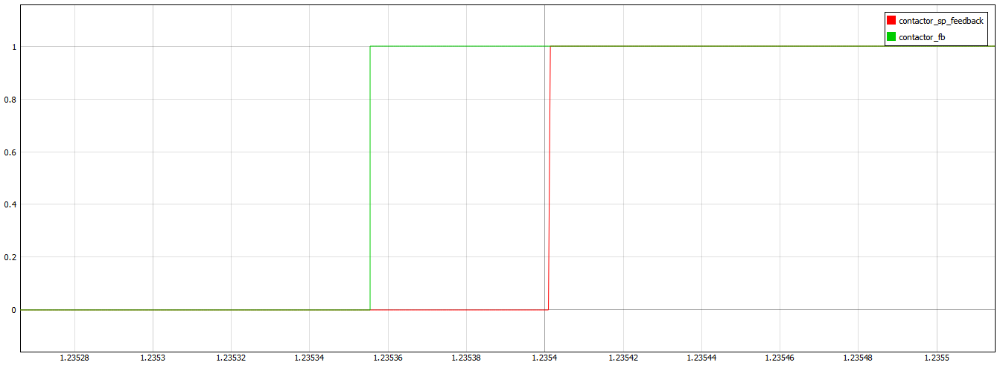
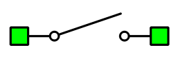
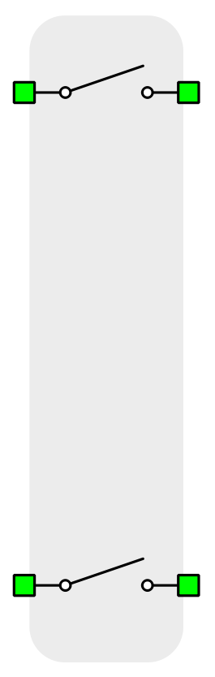
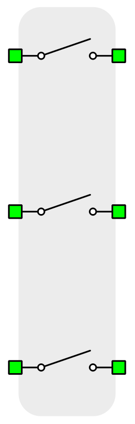
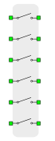
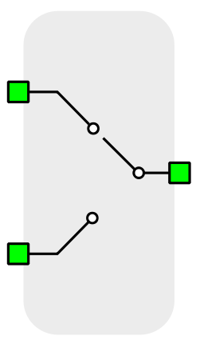
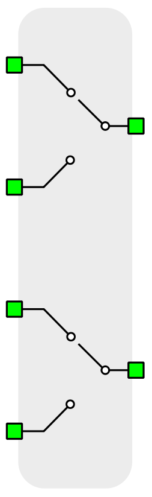
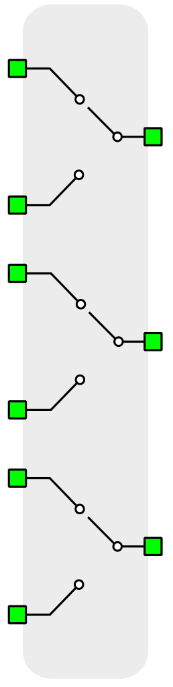

Contactors
This section provides a general description of contactors components in Typhoon HIL Schematic Editor
Model
For real-time/VHIL simulation each contactor is modeled either as ideal switch(Ron=0, Roff=inf) or LC model. LC model behaves as a small inductance when closed and a small capacitance when open.
Closed switch inductance is calculated as
Open switch capacitance is calculated as
For simulation in TyphoonSim contactor is modeled as changeable resistance (Ron/Roff).
Control
Selecting Digital input as the Control parameter enables assigning gate drive inputs to any of the digital input pins (from 1 to 32(64)). For example, if Sa is assigned to 1, the digital input pin 1 will be routed to the Sa switch gate drive. In addition, the gate_logic parameter selects either active high (High-level input voltage VIH turns on the switch), or active low (Low-level input voltage VIL turns on the switch) gate drive logic, depending on the design of the external controller. In TyphoonSim, digital signals are read from the internal virtual IO bus. Hence, if some signal is sent to digital ouput 1, it will appear on digital input 1.
Selecting Model as the Control parameter, enables setting of the control signal directly from the signal processing model. The input pin appears on the gate of the contactor component. When controlled from the model, logic is always active high.
Contactors can also be software controlled by the simulation controller. If the software control is enabled, the HIL simulator disregards the digital input signal, turn on/off delays and switching mode and only uses the software command to set the contactor state.
Digital Alias
If a contactor is controlled by digital input, an alias for digital input used by the contactor will be created. Digital input alias will be available under the Digital input list alongside existing Digital input signals. The alias will be shown as Contactor_name.Switch_name, where Contactor_name is name of the contactor component and Switch_name is name of the controllable switch in the contactor.
Contactor feedback Signal Processing output
Signal Processing output for the contactor feedback signal can be enabled by setting the property Feedback output to True. This will create an output terminal on the contactor that can be used in the Signal Processing part of the schematic. This is illustrated in Figure 1.

It is important to mention that the Signal Processing feedback output is delayed in comparison with the Digital feedback output signal which is available in SCADA/TyphoonSim Scope as Contactor_name.feedback due to the Signal Processing execution rate. Figure 2 illustrates this.

General (Tab)
- Control source
- Specifies how contactor is controled. It is possible to choose between: Digital input and Model
- More details about each type of control can be found in the Control section
- If Digital input is selected as Control source, the following
properties can be used:
- Sa
- Digital input that is used to control contactor
- Sa_logic
- Logic that will be applied to control signal for contactor
- Active high or active low
- Sa
- If Model is selected as Control source, the following properties
can be used:
- Execution rate
- Defines the period between two updates of gate signals for the component. Gate signals are provided as a signal processing input to component.
- Execution rate
- Feedback output
- Creates a signal processing output which allows use of a feedback signal in Signal processing in the model
- More details about each type of control can be found in the Contactor feedback Signal Processing output section
- If feedback output is selected, following property will appear:
- Execution rate
- Defines the period between two updates of gate signals for the component. Gate signals are provided as a signal processing input to component.
- Execution rate
- Signal type
- Available if signal processing Feedback output is True
- Defines the type of the feedback signal.
- Available options are: real, int, uint
- Number of phases
- Allows selection of the number of phases for the selected contactor (1-10).
- Only available in Multi Pole Single Throw Contactor
Switch model (Tab)
- Use LC model switch
 This property is ignored in TyphoonSim. For
simulation in TyphoonSim contactors are modeled as changeable resistance
(Ron/Roff).
This property is ignored in TyphoonSim. For
simulation in TyphoonSim contactors are modeled as changeable resistance
(Ron/Roff).- Allows selection of which type of contactor model to use.
- More details about each conactor model can be found in the Model section
- Resistance
- This property is
ignored in TyphoonSim. Resistance value will not affect TyphoonSim simulation at
all. For simulation in TyphoonSim contactor is modeled as changeable resistance
(Ron/Roff).
- Only available in contactors that have Use LC model switch switch option.
- Allows setting of the resistance which will define actual inductance and capacitance values in case of LC model switch.
- Available in Single Pole Single Throw and Triple Pole Single Throw Contactors
Initial state (Tab)
- Initial state
- Initial state allows us to define starting state of the contactor. It can be open(OFF) or closed(ON).
Timing (Tab)
-
- On delay
- Represents delay that appears when we are turning ON the contactor (when we are closing it)
- Off delay
- Represents delay that appears when we are turning OFF the contactor (when we are opening it)
- Switching
- Allows us to choose when the contactor's turn off event will happen: on zero current or on any current
- On delay
Extras (Tab)
- Public - Components marked as public expose their signals on all levels.
- Protected - Components marked as protected will hide their signals to components outside of their first locked parent component.
- Inherit - Components marked as inherit will take the nearest parent 'signal_access' property value that is set to a value other than inherit.
Contactor components
Single Pole Single Throw Contactor (Ports)

- a_in (electrical)
- Phase A input port of the contactor component
- a_out (electrical)
- Phase A output port of the contactor component
- ctrl_in (in)
- Available if Model control is selected
- Input control signal for contactor
- feedback_out (out)
- Available if Feedback output option is selected
Double Pole Single Throw Contactor (Ports)

- a_in (electrical)
- Phase A input port of the contactor component
- a_out (electrical)
- Phase A output port of the contactor component
- b_in (electrical)
- Phase B input port of the contactor component
- b_out (electrical)
- Phase B output port of the contactor component
- ctrl_in (in)
- Available if Model control is selected
- Input control signal for contactor
- feedback_out (out)
- Available if Feedback output option is selected
Triple Pole Single Throw Contactor (Ports)

- a_in (electrical)
- Phase A input port of the contactor component
- a_out (electrical)
- Phase A output port of the contactor component
- b_in (electrical)
- Phase B input port of the contactor component
- b_out (electrical)
- Phase B output port of the contactor component
- c_in (electrical)
- Phase C input port of the contactor component
- c_out (electrical)
- Phase C output port of the contactor component
- ctrl_in (in)
- Available if Model control is selected
- Input control signal for contactor
- feedback_out (out)
- Available if Feedback output option is selected
Multi Pole Single Throw Contactor (Ports)

Number of phases can be selected in a range from 1 to 10.
- in_n (electrical)
- Where n is any value from 1 to 10 (number of phases)
- Phase input n port of the contactor component
- out_n (electrical)
- Where n is any value from 1 to 10 (number of phases)
- Phase output n port of the contactor component
- ctrl_in (in)
- Available if Model control is selected
- Input control signal for contactor
- feedback_out (out)
- Available if Feedback output option is selected
Single Pole Double Throw Contactor (Ports)

If control signal is equal to 0, S1 switch is closed and S2 open. If control signal is not equal to 0, S1 switch is open and S2 closed.
- S1 (electrical)
- Phase A first input port of the contactor component
- S2 (electrical)
- Phase A second input port of the contactor component
- S0 (electrical)
- Phase A output port of the contactor component
- ctrl_in (in)
- Available if Model control is selected
- Input control signal for contactor
- feedback_out (out)
- Available if Feedback output option is selected
Double Pole Double Throw Contactor (Ports)

- Sa1 (electrical)
- Phase A first input port of the contactor component
- Sa2 (electrical)
- Phase A second input port of the contactor component
- Sa0 (electrical)
- Phase A output port of the contactor component
- Sb1 (electrical)
- Phase B first input port of the contactor component
- Sb2 (electrical)
- Phase B second input port of the contactor component
- Sb0 (electrical)
- Phase B output port of the contactor component
- ctrl_in (in)
- Available if Model control is selected
- Input control signal for contactor
- feedback_out (out)
- Available if Feedback output option is selected
Triple Pole Double Throw Contactor (Ports)

- Sa1 (electrical)
- Phase A first input port of the contactor component
- Sa2 (electrical)
- Phase A second input port of the contactor component
- Sa0 (electrical)
- Phase A output port of the contactor component
- Sb1 (electrical)
- Phase B first input port of the contactor component
- Sb2 (electrical)
- Phase B second input port of the contactor component
- Sb0 (electrical)
- Phase B output port of the contactor component
- Sc1 (electrical)
- Phase C first input port of the contactor component
- Sc2 (electrical)
- Phase C second input port of the contactor component
- Sc0 (electrical)
- Phase C output port of the contactor component
- ctrl_in (in)
- Available if Model control is selected
- Input control signal for contactor
- feedback_out (out)
- Available if Feedback output option is selected